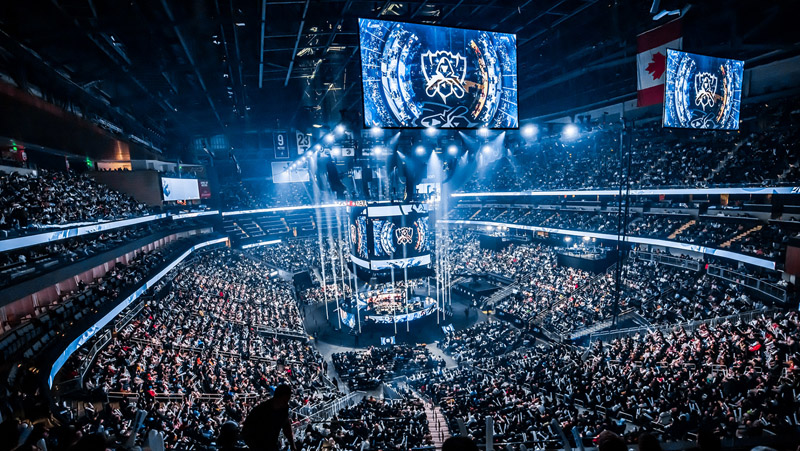

A continuacion damos un poco de informacion sobre los Esport que fueron mas influenciados en el sector de argetina.
Los ciberdeportes, también conocidos como deportes electrónicos o eSports, han experimentado un crecimiento significativo en Argentina en los últimos años. Aquí tienes información relevante sobre los ciberdeportes en Argentina:
- Crecimiento y Popularidad:
Los ciberdeportes han ganado popularidad en Argentina tanto en términos de espectadores como de participantes. Eventos locales y regionales atraen a grandes multitudes, y las transmisiones en línea de torneos internacionales también son seguidas por una amplia audiencia.
Los juegos más populares en la escena de los ciberdeportes argentina incluyen títulos como League of Legends, Counter-Strike: Global Offensive (CS:GO), Dota 2, Fortnite, y Valorant, entre otros. Estos juegos suelen ser los focos principales de los torneos locales y regionales.
En Argentina existen varios equipos profesionales de eSports que compiten tanto a nivel nacional como internacional. Estos equipos suelen tener patrocinadores y participan en torneos importantes dentro y fuera del país.
Buenos Aires es un centro importante para los eventos de eSports en Argentina. Se organizan torneos y competiciones de forma regular, atrayendo a jugadores y espectadores de todo el país. Además, se realizan eventos de exhibición, conferencias y convenciones relacionadas con los ciberdeportes.
Se han establecido cibercafés y centros de juego especializados en varias ciudades argentinas para satisfacer las necesidades de los jugadores. Estos lugares proporcionan equipos de alta gama y una conexión a internet rápida para que los jugadores puedan practicar y competir.
Algunas instituciones gubernamentales y organizaciones han comenzado a mostrar interés en los ciberdeportes como una forma de promover el deporte y la competitividad entre los jóvenes. Se han realizado esfuerzos para brindar apoyo y recursos a los equipos y jugadores locales.
Los jugadores y equipos argentinos también participan en la creación de contenido en plataformas de streaming como Twitch y YouTube. Muchos jugadores tienen canales donde transmiten sus partidas en vivo, comparten consejos y tutoriales, y crean contenido relacionado con los juegos.
Cuadro Comparativo de Ciber Deportes en Argentina
| Ciber Deporte | Principales Juegos | Equipos y Organizaciones | Eventos y Torneos |
|---|---|---|---|
| League of Legends (LoL) | LoL | Isurus Gaming, Furious Gaming, Nocturns Gaming | Copa Argentina de eSports, Campeonato Argentino de League of Legends (CALoL) |
| Counter-Strike: Global Offensive (CS:GO) | CS:GO | Isurus Gaming, Furious Gaming, Nocturns Gaming | Copa Argentina de eSports |
| Dota 2 | Dota 2 | Isurus Gaming, Malvinas Gaming, Wygers Argentina | Campeonato Argentino de Dota 2 (CAD2) |
| FIFA | FIFA | Furious Gaming, Isurus Gaming, Malvinas Gaming | Copa Argentina de eSports |
| Fortnite | Fortnite | Malvinas Gaming, Isurus Gaming | Copa Argentina de eSports |
| StarCraft II | StarCraft II | Isurus Gaming | Copa Argentina de eSports |